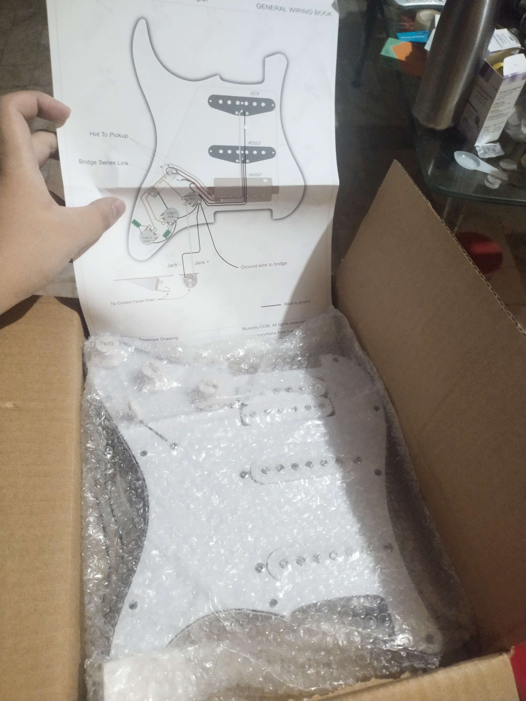
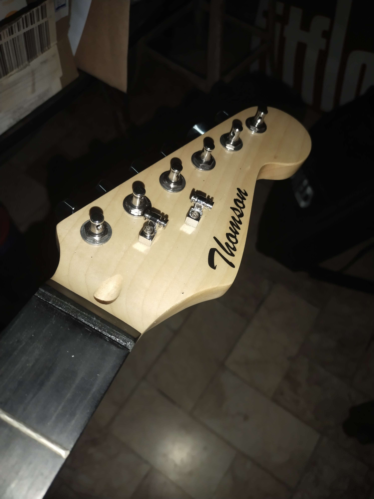
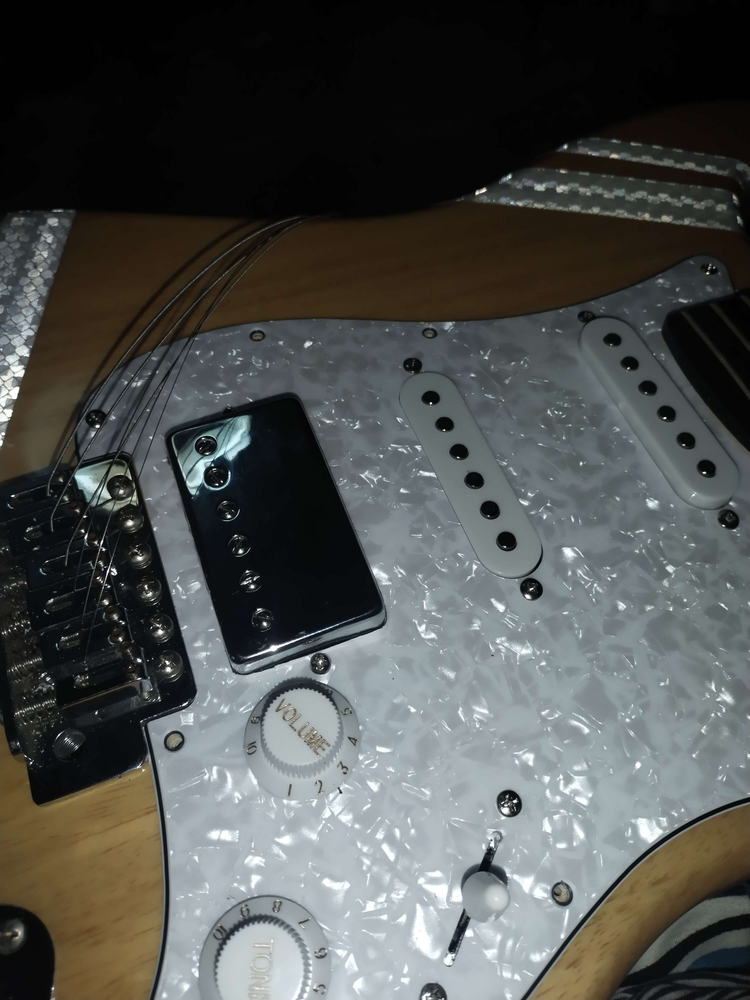
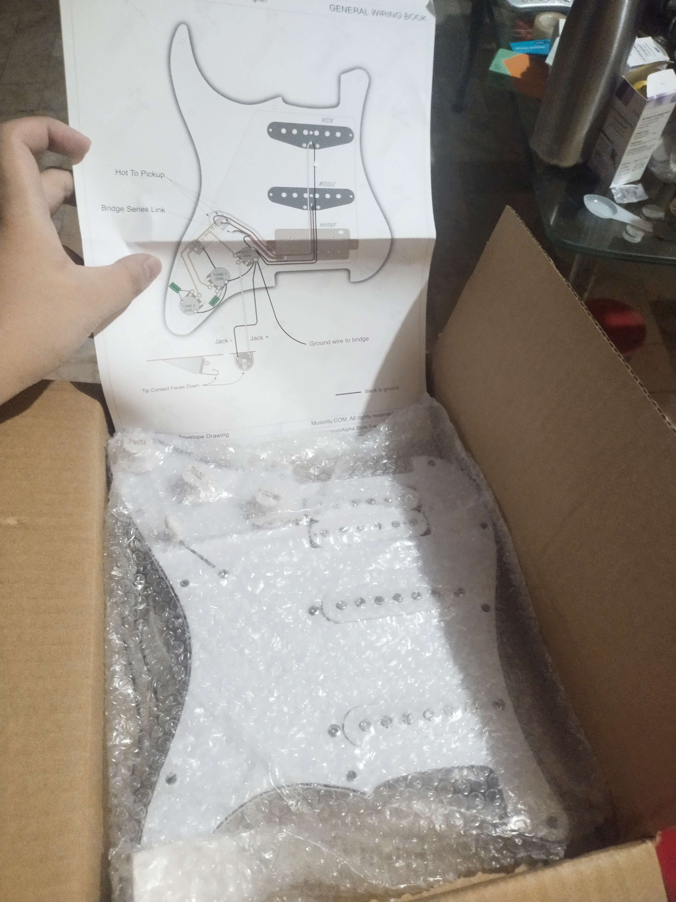
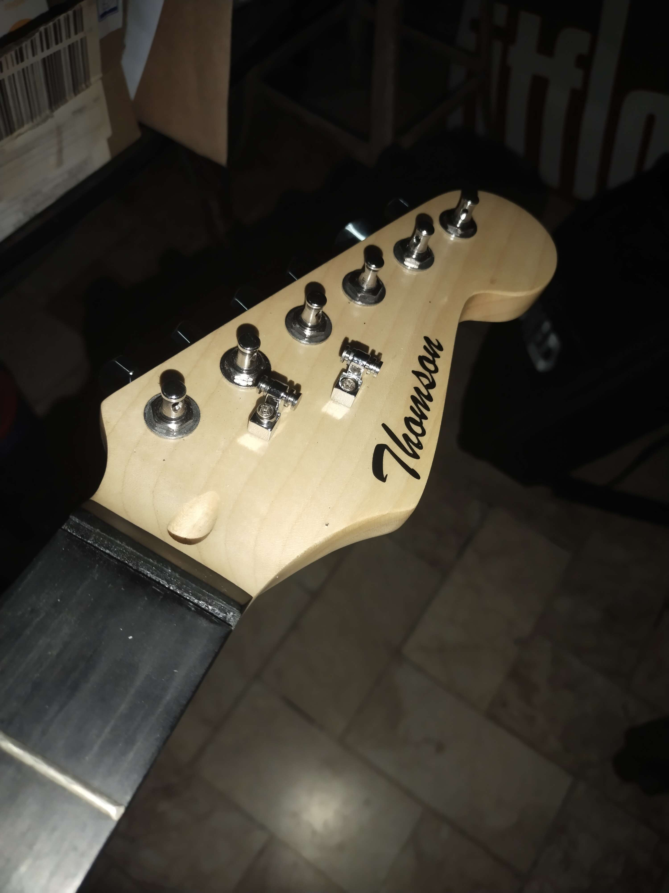
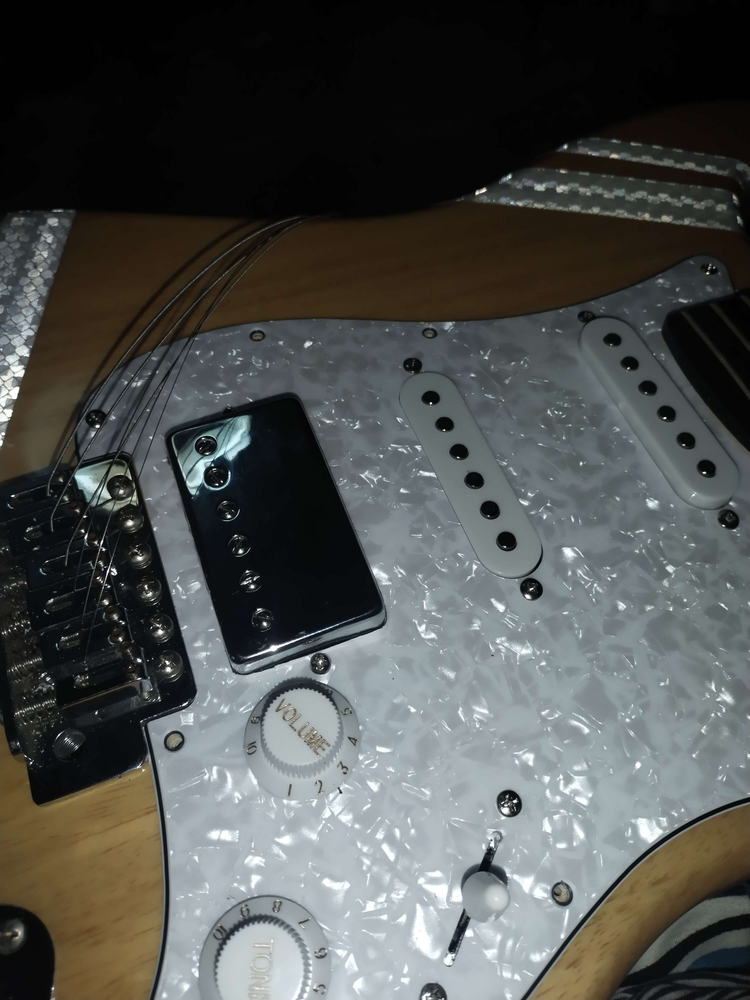
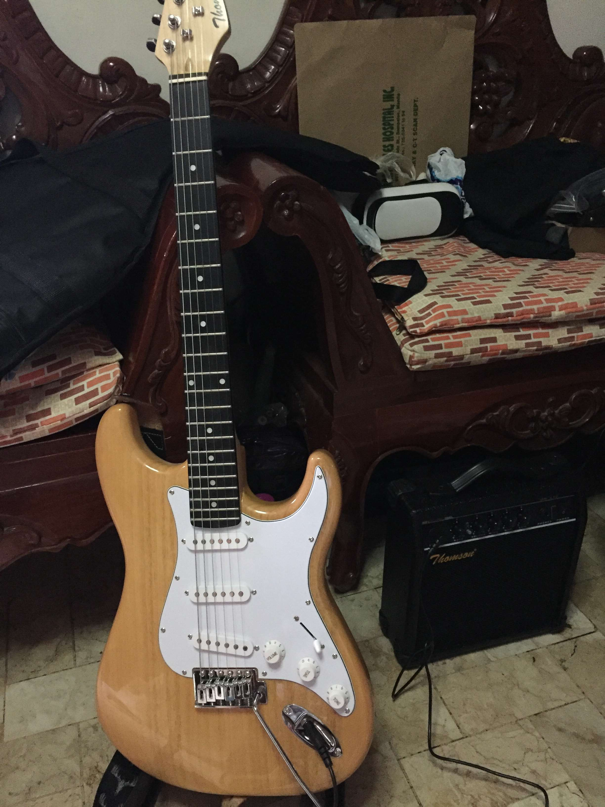
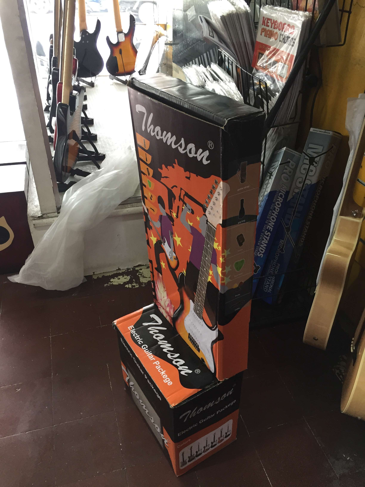

Chrome Everyting! - December 2023
- All coil pickups now chrome as well as the control knobs
- Bridge pickup replaced with bridge pickup from old pickguard
(december 2)
MAJOR CHANGES - November 2023
- (november 14) strap locks
- (november 17) HSS pickups conversion, new pickguard, dampened tremolo springs, reverted back to non floating tremolo.
- (november 29) roller string trees, metal humbucker cover
 





Late 2022 to Early 2023
- (September 2022) visual cosmetics usic reflective tape
- (January 2023) obtained my first guitar pedal [SQOE crunch distort]
- (February 2023) obtained my second guitar pedal [Naomi classic chorus]
- (sometime early 2023) floating tremolo
A purchase I would never regret! - August 2022
-
Thomston Stratocaster
- natural finish
- solid ashwood body, maple neck, rosewood fingerboars
- SSS pickups configuratiton
- stock controls
- pretty much a cheap generic electric guitar less than $80  
Original Specs